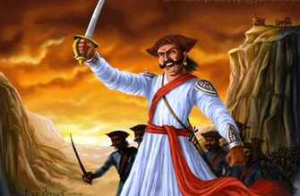

Pratishivaji in history
identify as
After the Treaty of Purandar, Shivaji Maharaj, Mirza Raje, Netaji Palkar and Diler Khan marched on Bijapur. There, the four of them were failing in front of Sarja Khan, the general of Adilshahi. And Deler Khan began to blame Maharaj for that failure. So Maharaj returned from Bijapur to conquer Panhalgad of Bijapurs, Maharaj raided the fort at night. The Maharaja was sure that Adilshahi Kiledar would be invincible but Kiledar was cautious. In that, Netaji Palkar could not reach on time and deliver the kumak to the Maharaja. In this Maharaj was defeated and about 1000 people were killed. Maharaj got angry with Netaji and dismissed Netaji in a letter saying "Samayas Kaisa Pavla Nahis". Then Netaji went and got the Bijapurkars. After the Maharaj left for Agra, Mirza Raja converted Netaji Palkar from the Bijapurkars to the Mughals.
When Shivaji Maharaj managed to escape from Aurangzeb's captivity in Agra, Shivaji was released thinking that Shivaji should not be released now, Aurangzeb issued an order for the arrest of Netaji Palkar on 19 August 1666 from Agra. Netaji was at this time in Mowgli camp at Dharur near Beed. On 24 October 1666, Mirza Raje Jaisingh arrested Netaji and his cousin Kondaji. Diler Khan arranged to send them to Agra. After 4 days of agonizing, Netaji approved the conversion. On 27 March 1667, Netaji became a Muslim and was named as 'Muhammad Kuli Khan'.June 1667. As per Aurangzeb's order, Netaji left Kabul on a campaign to Kandahar. Nearing Lahore, he made an unsuccessful attempt to escape. For the next 9 years, Netoji was on a campaign in Kabul, Kandahar.
Netaji Palkar
Netaji Palkar was the head of Swarajya for a long time. He was 'PratiShivaji' i.e. 'Second Shivaji'. Netaji hails from Shirurvillagein Pune district He had won many wars. At the time of Afzal Khan Massacre, Netaji played the lion's share in driving out Afzal Khan's army. But after the Treaty of Purandar, when he had to move away from the Swarajya due to some disputes with Shivaji Maharaj, he worked for the Mughals. But Netaji came back to the Swarajya after nine years. But after coming back to Swaraj, Shivaji Maharaj again performed the proper procedure and allowed him to enter Hinduism. After Shivaji Maharaj, he did this job of Sambhaji Maharaj.
Aurangzeb remembered 'Prati Shivaji' when all the chieftains of Aurangzeb were failing before Shivaji Maharaj. Aurangzeb felt that after 9 years from Batu, Netaji had definitely become Pak. Then he sent this 'Muhammad Qulikhanas' along with Dilerkhana on an expedition to Maharashtra.May 1676. On 19 June 1676, Shivaji Maharaj formally accepted him back into Hinduism.
It is mentioned in Mowgli newspaper that Maharaj and Netaji are related. Maharaja's wife Putalabai Rani Saheb's Maher belongs to Palkar family. Kamalabai, a princess of the Maharaja, was married to Janoji Palkar. But there is still a big question mark as to who Janoji and Putalabai are Netaji. According to 'Chhawa', Netaji Palkar was the great uncle of Shivraya's Maharani Sagunabai.
learn more